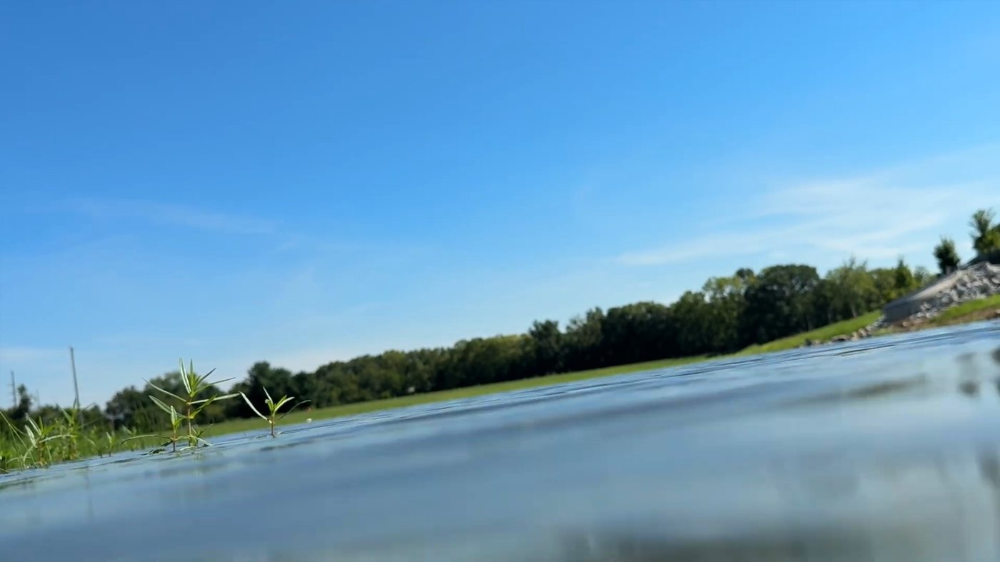
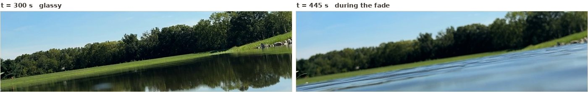
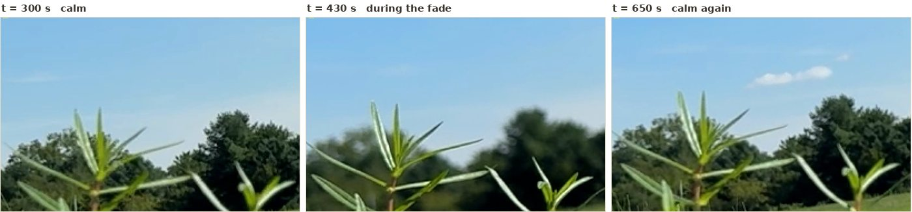

Fun With Science / Globe Deconstruction / Bottom-Up Observations / The Flat Surface Test
The arithmetic on his slide is right. A globe hides nothing at 540 feet. His own frames show what hid the raft — and it is not the atmosphere, and not the Earth.
On 18 August 2026, Shape Debate towed a white inflatable lounger 540 feet across a suburban pond and filmed it from a lens 0.375 inches above the water — Can an object disappear over a flat surface? first attempts. The raft vanished, low end first. We pulled the published video and his own camera originals and measured everything measurable: the geometry, the fade, the focus, the water surface, the whole eleven minutes of the main run. This page states what we found up front, shows the frames behind it, and ends with the afternoon of tests that would settle what little remains open.
Observation concededNot evidence about the Earth
What we found
His slide is right. Curvature hides nothing at 540 feet from any camera height he used — zero inches, at every height — and anyone answering this video by disputing the geometry has not checked it.
What hid the raft is mostly the vantage, finished off by the camera. From a third of an inch above the surface, every foot of water from fifty feet out to the far bank piles into about two arcminutes of visual angle — and the camera's finest renderable edge is 4.8 arcminutes, the equivalent of watching the pond with 20/100 vision. The raft never sinks behind anything: it loses every background it could be told apart from, dims below the noise floor, and stays gone. In the main run the weather helped it along — ripple trains arrive on camera at t ≈ 380 s, the autofocus abandons the far field, and the blurred near water sweeps across the raft's position during the fade — but the two earlier attempts lose the raft over glassy water with no weather at all. And what the frames record is a fade rather than a submergence: the raft dims and shrinks where it stands, edges first, thin end before tall — which is the ordering a tapering target gives for free, with nothing hiding anything. It is the familiar beach experience — the boat you cannot make out by eye, inside a horizon that visibly continues beyond it, that binoculars bring straight back — staged at an eye height no eye has ever used.
The explanation most people would reach for is the one the frames exclude. Refraction strong enough to bury four inches at this range would end the pond in a band of false sky 127 feet from the lens. Eleven minutes of footage show the opposite signature: erect reflections running unbroken to the far bank.
And none of it bears on the shape of the Earth. Whatever hid the raft is roughly 48× stronger than curvature could possibly be at that range, switches off when the camera rises, and reverses under magnification — three things the globe's geometry never does. The pond demonstrates a real effect of the first inches above the water. It cannot speak for a ship eight miles out at sea, in either direction.
The calculation slide is correct, every line of it. Recomputed independently with R = 20,903,520 ft:
| Quantity | His slide | Recomputed |
|---|---|---|
| Horizon distance from 0.375 in | 1,143 ft | 1,143.01 ft |
| Sightline reaches water past target | over 600 ft | 603.0 ft |
| Threshold eye height, d²/2R at 540 ft | 0.0837 in | 0.08370 in |
| Ratio, 0.375 in to threshold | ~4.5× | 4.480× |
| Height hidden by curvature at 540 ft | 0 in | 0 in |
It is better than correct — it is conservative. The slide uses pure geometric curvature; fold in standard surveyor's refraction (k ≈ 0.13–0.17, the “seven-sixths Earth” rule) and the hiding threshold drops further, leaving his lens about 5.2× above it instead of 4.5×. Anyone tempted to answer this video with “you forgot refraction” has it backwards: ordinary refraction strengthens his slide.
The underlying claim is also true, and this site said so before the video existed. Objects really can vanish bottom-up over a dead-flat surface — every driver has watched a car sink into the false water of a hot road. On the narrow existence claim he set himself — that something can be made to vanish over a flat surface with no curvature involved — he is right, and he went and demonstrated it rather than arguing about it. (Whether his raft vanished bottom-up turns out to be a different question, and §2 measures it.) The method visibly improves across his three attempts — fixed camera, towed target, thin strings, orientation corrections — which are the instincts of someone actually trying to measure something.
One observation repeats across all three attempts: the raft is plainly visible from a raised camera and gone from a lens under half an inch. That height-dependence already retires two candidates — curvature, which hides zero from every height used, and the raft's angular size, which does not change when a camera rises. What it points to instead is what the vantage itself does to the scene. This is the view from down there:

To be exact about the geometry, because the tempting version of this claim is wrong: the raft is not submerged in that band. Nine-tenths of its height projects clear above the entire pond, silhouetted against the foot of the far bank. Anyone checking the frames will see the raft standing above the water, and they will be right.
Compression does not swallow the raft. It removes any clean background to see the raft against.
Now put the camera in units anyone can feel. Its smallest renderable transition — nine pixels at 0.533 arcminutes each — is 4.8 arcminutes. An eye with 20/20 vision resolves about one. At this framing the video is watching the pond with roughly 20/100 vision — five times coarser than the person holding the phone. A 2.12′-tall, 37′-long, bright-white raft is a comfortable sliver to a human eye. To this camera its entire height fits inside half a blur width: the light still arrives, but spread so thin — roughly four-ninths of its true peak — that it lands in the same few pixels as the waterline and reflection fold beneath it. And a pixel can hold only one colour: an average of everything that falls on it. Down in that band, the raft, the waterline, the reflection fold and the foot of the bank are all fighting for the right to set the colour of the same four pixels — and four inches of raft is outvoted by five hundred feet of scene. A four-pixel object whose entire surroundings fall within one blur width is a marginal detection in any weather. It goes when it goes, and it stays gone.
If that sounds exotic, it is an experience everyone has had. Stand on a beach and there is often a boat out there you cannot make out by eye at all — while the water visibly continues past where it is, so it cannot be “beyond the curve” — and binoculars bring it straight back. The boat was never hidden. It was unresolved, sitting in the crowded band of sea near the horizon where a small angular target is hardest to pick out. This pond is that everyday experience, manufactured deliberately: the vantage squeezed four hundred feet of “sea” into two arcminutes, and the camera brought a fifth of the resolving power of the eye on the beach.
The fade itself says the same thing. Tracking the raft's peak brightness against the background beside it:
| t (s) | 415 | 424 | 433 | 439 | 445 | 451 | 460 |
|---|---|---|---|---|---|---|---|
| Raft peak | 238 | 225 | 221 | 181 | 135 | 140 | 140 |
| Local background | 109 | 113 | 113 | 114 | 111 | 117 | 118 |
| Contrast | 129 | 112 | 108 | 67 | 24 | 23 | 22 |
The background never moves; the raft dims smoothly where it stands, from full contrast to the noise floor in thirty seconds during which its distance changed three percent. On a resolved target that smoothness would rule out something rising in front of it — but at four pixels under a nine-pixel blur, any cut line is smeared into a fade, so this settles less than it seems to. What it does rule out is a mirage line, which replaces what it hides with bright false sky: the background here never brightens.
Which reframes the video's own headline: the raft does not sink. It fades out where it stands.
What the frames record is a fade, eaten from the outside in — the faint edges drop below threshold first, the bright core lasts longest, and the blob shrinks where it stands until nothing is left. Nothing climbs it; no waterline rises through it. The one directional fact his captions report — the low end going first — is the wedge shape of the lounger, not a hiding line: thin ends carry less light, so any uniform loss of contrast takes them first. A fade produces the “bottom-up” observation for free. To be careful about how far that goes: at four pixels under a nine-pixel blur, a genuine rising cut could not have been resolved either, so these frames cannot separate fade from cut on the raft itself. They do not need to. The two mechanisms that would draw a real cut here — curvature and a mirage line — are independently excluded above, and a tapering target under falling contrast reproduces the ordering with nothing hiding anything. The low end did go first. What that ordering is evidence of is the shape of the raft, not the shape of anything it was floating on.
Attempts one and two lose the raft over glass. Mirror-smooth water, unbroken reflections, no wind, no focus trouble — and the raft still dims out as an unresolved dot exactly where the bank, waterline and reflection meet. A white bench a few feet up the same bank stays plainly visible in the very frames where the raft is lost: whatever removes it operates only at the waterline, not on the image. That is the compression account doing its work on a calm day, needing nothing else.
The main run adds weather on top. For its first six minutes the pond is glass. Around t = 380 s ripple trains sweep in; the camera's focus leaves the far field — the treeline goes from its usual 8-pixel edge to 20–22 — and the blurred near water visibly climbs the frame, sweeping across the raft's image band. The raft's contrast collapses inside that window, 415–450 s. The defocus alone accounts for roughly half the collapse; near-field chop, standing into a sightline that begins nine millimetres above the water, is the natural owner of the rest.

no crop.MOV, native-resolution crops.Two measurements pin down what that mid-run blur is. It is differential: the treeline's edges roughly double while a reed a few feet from the lens holds its 3–4 pixel edges in every frame — near objects are spared, which uniform fogging, encoder trouble and a shaking mount cannot do. And it is static: across consecutive frames the softened treeline edge holds position to a quarter of a pixel with no boiling, where air turbulent enough to double an edge width makes it dance. A lens refocused toward the near field — baited, most plausibly, by the newly arrived high-contrast ripple texture — does exactly this. The atmosphere does not.

no crop.MOV, native-resolution crops.He anticipates the focus objection with a caption — the trees come back into focus and the raft is still not there — and he is right about that. It establishes that the raft stayed invisible once sharpness returned, which is exactly what four pixels against a nine-pixel floor predicts at full range. It cannot establish why it went, because it went while the camera was soft and the near field was up.
The target itself. The lounger is a wedge — four inches at one end tapering toward nothing — towed on strings, and it yaws on camera; his own method cards say he corrected its orientation mid-run. A wedge fades thin-end-first under any uniform contrast loss, and a yaw toward end-on cuts the visible streak severalfold for free. “It disappeared from the bottom up” is the null expectation for this object, not a finding.
The near shore. At the start of the run the raft is filmed through reeds standing inches from the lens — and an obstruction inches away needs almost no height at all: a half-inch crest fifteen feet out hides 4.9 inches at 540 feet. His calm-water check was filmed at the pond's midpoint, where that lever arm is 2× instead of 36× — the one place along the sightline where surface state barely matters.
no crop.MOV, t = 20 s, enlarged.Grant everything the video shows. To bury four inches of raft, something must hide four inches; curvature at 540 feet can hide at most 0.0837 inches, from a lens at zero height.
And local effects do not scale the way curvature does. Curvature's hidden height grows with the square of distance beyond the horizon — 0.08 inches at this pond becomes forty feet at eight miles — while a near obstruction grows only linearly and the vantage effect dies the moment an observer stands up. What survives at sea ranges is the atmosphere itself, which accumulates along the path; that is why long, low sightlines are exactly where mirage effects live, and it is the thread connecting this pond to the two classic low-camera anomalies:
One rule covers all of it: light bends toward denser air. Cool water under warm air bends rays down along the surface, and distant objects stay visible past where geometry buries them — the Bedford Level of 1838, and the Rampion turbines we answer on our own page. Warm surface under cool air bends rays upward, and low objects vanish early — the hot road, and the claim made for this pond. Same layer, opposite signs, decided by which way the temperature runs.
A hull-down ship is a different observation in kind, not degree. Its truncation is resolved: a sharp cut with a sharp superstructure standing above it, at a height that follows d²/2R, unmoved by magnification — zoom shows the cut more clearly and does not bring the hull back. The pond fade is unresolved, smooth, and reversed by optics: where the camera height of his zoomed shots can be established, the zoom recovers the raft. Those are checkable properties of footage, and they are the standard both sides' low-over-water videos should be held to — a P900 pointed at a “missing” skyline is running exactly this test, and what it brings back was never hidden, only unresolved.
Wallace resolved this exact experimental design in 1870: raise the sightline out of the surface layer, and give the geometry a graduated marker so it can be read rather than argued. The modern version is five short items, four of them possible at the same pond in one afternoon.
What would not change our mind is the same run in 4K. To be fair about what 4K is: a cleaner encode of the same capture buys almost nothing, but genuine 4K capture is finer sampling and would roughly halve the camera's floor — the raft goes from four pixels under a nine-pixel edge to about eight under ten. Halving is real; it is also not the tenfold the claim requires, and it does nothing about the geometry, the near field, or the focus. A factor of two where ten is needed, against focal length's five-to-twenty and elevation's everything — the design, not the pixel count, is what the five items above repair.
no crop.MOV, 1.34 GB, 1920×1080 30 fps, shot 18 August 2026, 11:07–11:19 EDT).